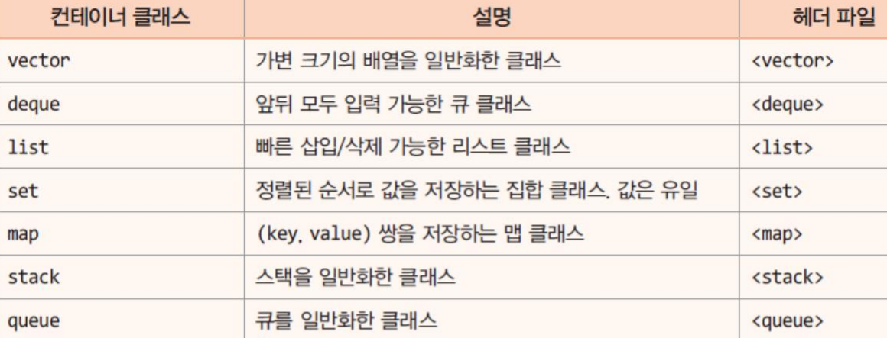
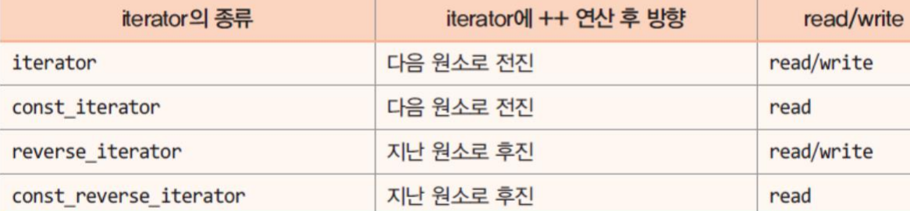
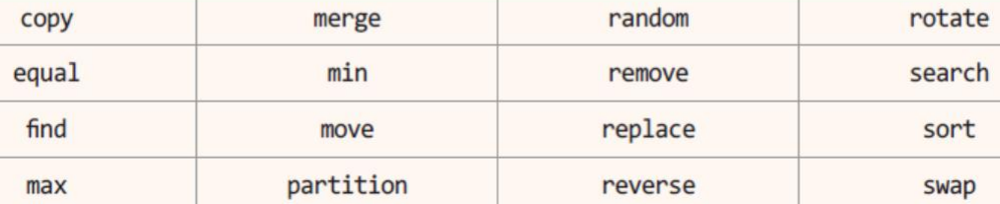
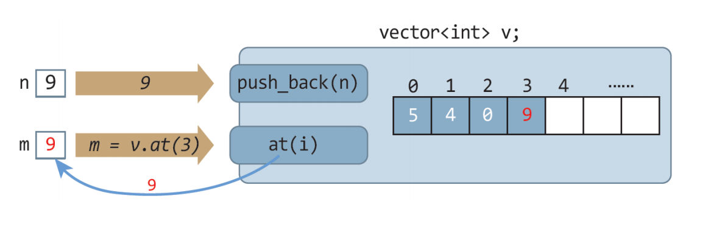
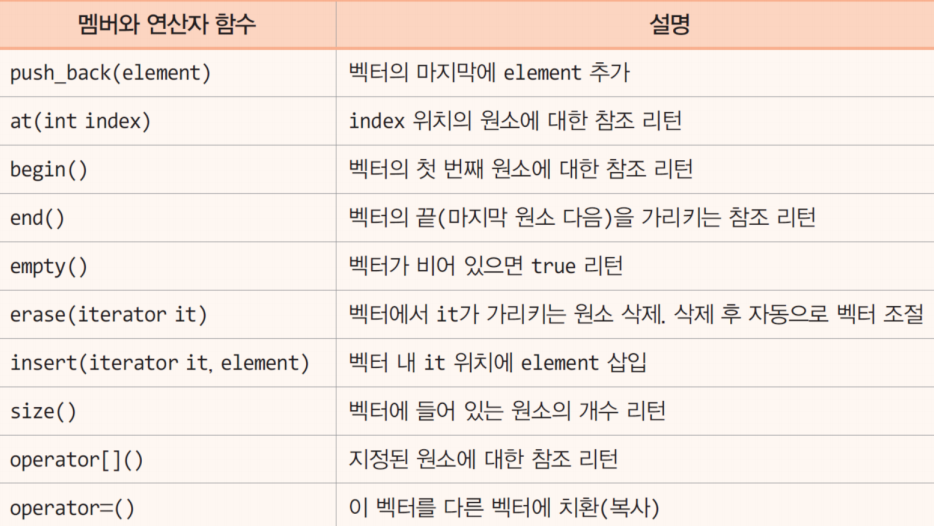
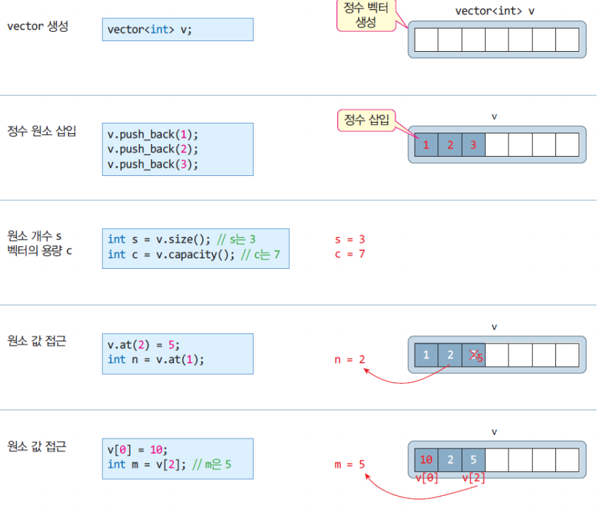
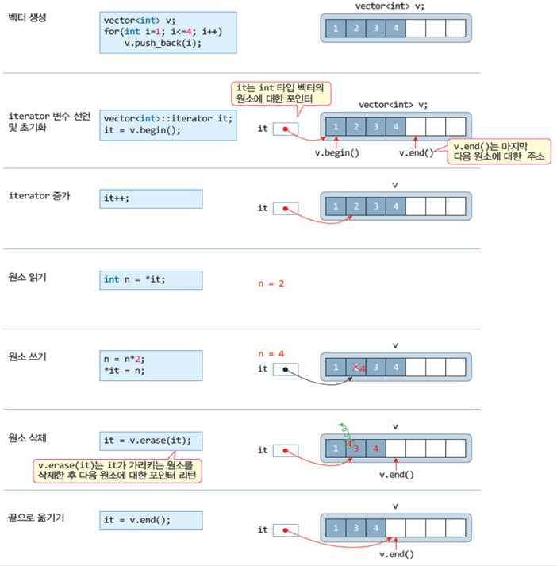
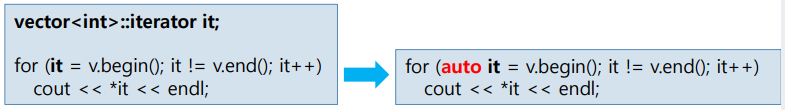
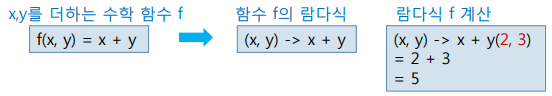
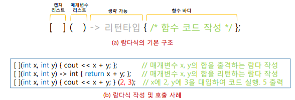

Chapter 14. 표준 템플릿 라이브러리(STL)¶
'명품 C++Programming - 황기태' 10장 학습 내용
1절. 표준 템플릿 라이브러리(STL)¶
C++ 표준 템플릿 라이브러리, STL¶
- STL(Standard Template Library)
- 표준 템플릿 라이브러리
- C++ 표준 라이브러리 중 하나
- 많은 제네릭 클래스와 제네릭 함수 포함
- 개발자는 이들을 이용하여 쉽게 응용 프로그램 작성
- STL의 구성
- 컨테이너 : 템플릿 클래스
- 데이터를 담아두는 자료 구조를 표현한 클래스
- 리스트, 큐, 스택, 맵, 셋, 벡터

- iterator : 컨테이너 원소에 대한 포인터
- 컨테이너의 원소들을 순회하면서 접근하기 위해 만들어진 컨테이너 원소에 대한 포인터

- 알고리즘 : 템플릿 함수
- 컨테이너 원소에 대한 복사, 검색, 삭제, 정렬 등의 기능을 구현한 템플릿 함수
- 컨테이너의 멤버 함수 아님

STL과 관련된 헤더 파일과 이름 공간¶
- 헤더 파일
- 컨테이너 클래스를 사용하기 위한 헤더 파일
- 해당 클래스가 선언된 헤더 파일 includee
- vector 클래스를 사용하려면 #include
- list 클래스를 사용하려면 #include
- 알고리즘 함수를 사용하기 위한 헤더 파일
- 알고리즘 함수에 상관 없이 #include
- 알고리즘 함수에 상관 없이 #include
- 이름 공간
- STL이 선언된 이름 공간은 std
2절. Vector¶
Vector 컨테이너¶
- 가변 길이 배열을 구현한 제네릭 클래스
- 개발자가 벡터의 길이에 대한 고민할 필요 없음
- 원소의 저장, 삭제, 검색 등 다양한 멤버 함수 지원
- 벡터에 저장된 원소는 인덱스로 접근 가능
- 인덱스는 0부터 시작

vector 클래스의 주요 멤버와 연산자¶

vector 다루기 사례¶

-
예제 1. vector 컨테이너 활용 예제
SourceCodeChecking -
예제 2. 문자열을 저장하는 벡터 생성 예제
SourceCodeChecking
3절. Iterator¶
iterator 사용¶
- iterator란 ?
- 반복자라고도 부름
- 컨테이너의 원소를 가리키는 포인터
- iterator 변수 선언
- 구체적인 컨테이너를 지정하여 반복자 변수 생성

- 예제 3. iterator를 사용하여 vector의 모든 원소에 2를 곱하는 예제
SourceCodeChecking
4절. Map¶
map 컨테이너¶
- 특징
- ('키', '값')의 쌍을 원소로 저장하는 제네릭 컨테이너
- 동일한 '키'를 가진 원소가 중복 저장되면 오류 발생
- '키'로 '값' 검색
- 많은 응용에 필요
-
include
- 맵 컨테이너 생성 예시
- 영한 사전을 저장하기 위한 맵 컨테이너 생성 및 활용
- 영어 단어와 한글 단어를 쌍으로 저장하고 영어 단어로 검색
// 맵 생성
Map<string, string> dic; // 키는 영어 단어, 값은 한글 단어
// 원소 저장
dic.insert(make_pair("love", "사랑")); // ("love", "사랑") 저장
dec["love"] = "사랑"; // ("love", "사랑") 저장
// 원소 검색
string kor = dic["love"]; // kor은 "사랑"
string kor = dic.at("love"); // kor은 "사랑"
- 예제 4. map으로 만든 영한 사전 예제
SourceCodeChecking
5절. STL 알고리즘¶
STL 알고리즘 사용¶
- 알고리즘 함수
- 템플릿 함수
- 전역 함수
- STL 컨테이너 클래스의 멤버 함수가 아님
- iterator와 함께 작동
- sort() 함수 사례
- 두 개의 매개 변수
- 첫 번째 매개 변수 : sorting을 시작한 원소의 주소
- 두 번째 매개 변수 : sorting 범위의 마지막 원소 다음 주소
vector<int> v;
...
sort(v.begin(), v.begin() + 3);
// v.begin()에서 v.begin() + 2까지 : 처음 3개 원소 정렬
sort(v.begin() + 2, v.begin() + 5);
// v.begin() + 2에서 v.begin() + 4까지 : 벡터의 세 번째 원소에서 3개 원소 정렬
sort(v.begin(), v.end());
// 벡터 전체 정렬
- 예제 5. sort() 함수를 이용한 vector Sorting 예제
SourceCodeChecking
6절. Auto¶
auto를 이용한 쉬운 변수 선언¶
- auto
- 기능
- C++11부터 auto 선언 의미 수정 : 컴파일러에게 변수선언문에서 추론하여 타입을 자동 선언하도록 지시
- C++11이전 : 스택에 할당되는 지역 변수를 선언하는 키워드
- 장점
- 복잡한 변수 선언을 간소하게, 긴 타입 선언 시 오타 줄임
- auto의 기본 사용 사례
auto pi = 3.14;
// 3.14는 실수이므로 pi는 double 타입으로 선언
auto n = 3;
// 3이 정수이므로 n은 int 타입으로 선언
auto *p = &n;
// 변수 p는 int* 타입으로 추론
auto의 다른 활용 사례¶
- 함수의 리턴 타입으로부터 추론하여 변수 타입 선언
- STL 템플릿에 활용
- vector
iterator 타입의 변수 it를 auto를 이용하여 간단히 선언

- 예제 6. auto 변수 예제
SourceCodeChecking
7절. 람다¶
람다¶
- 람다 대수와 람다식
- 람다 대수에서 람다식은 수학 함수를 단순하게 표현하는 기법

- C++ 람다
- 익명의 함수 만드는 기능으로 C++11에서 도입
- 람다식, 람다 함수로도 불림
- C#, Java, 파이썬, 자바스크립트 등 많은 언어들이 도입
람다식 선언¶
- 람다식의 구성
- 4부분으로 구성
- 캡쳐 리스트 : 람다식에서 사용하고자 하는 함수 바깥의 변수 목록
- 매개 변수 리스트 : 보통 함수의 매개 변수 리스트와 동일
- 라턴 타입
- 함수 바디 : 람다 식의 함수 코드

-
예제 7. 매개 변수 x, y의 합을 출력하는 람다식 생성 예제
SourceCodeChecking -
예제 8. auto로 람다식 저장 및 호출 예제
SourceCodeChecking -
예제 9. 캡쳐 리스트와 리턴 타입을 가지는 람다식 예제
SourceCodeChecking -
예제 10. 캡쳐 리스트에 참조를 활용하는 람다식 예제
SourceCodeChecking -
예제 11. STL for-each() 함수를 이용하여 벡터의 모든 원소를 출력하는 예제
SourceCodeChecking -
예제 12. STL 템플릿에 람다식 활용 예제
SourceCodeChecking